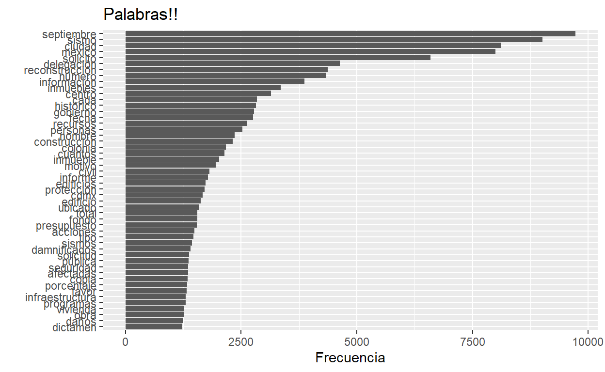

Primer acercamiento al análisis de sentimientos/emociones.
Después del primer intento de analizar texto, en español, sentí que todavía se podían hacer más cosas. Además, he descubierto que aquí puedo meter cosas interactivas. Ahora quiero seguir experimentando con ese tipo de cosas, y ampliar lo de análisis de texto.
Todas las ideas de análisis de texto vienen del increíble texto de Julia Silge: Text Mining with R. Hay un montón de material para investigar de como hacer análisis de texto en inglés. Análisis en español replicables también hay pero no todos son tan amigables (que es algo que yo siempre intento). Voy a utilizar el mismo conjuto de datos de la entrada anterior y que pueden descargar aquí).
pacman::p_load(tidyverse, tidytext, tm, wordcloud2, plotly)
Son los mismos paquetes de la vez pasada más una sorpresa: plotly, paquete que nos permite que al pasar el cursor sobre la gráfica nos dé información. Sé que se puede hacer más, pero lo iré explorando de a poco.
El análisis de sentimiento es, de manera muy simplificada y sencilla, evaluar la intención de una palabra para ver si se dice con un “tono” positivo o ngativo, que emoción expresa y como se relacionan. Yo sé que suena muy sencillo, pero al mismo tiempo requirió mucho trabajo e investigaciones llegar a este punto.
El inicio es igual. Conseguimos datos de texto, los ordenamos (tidy), luego separamos las palabras (unnest tokens), limpiamos la nueva base de datos (quitar stop words) y a partir de este punto podemos hacer análisis más interesantes.
inp <- "/Users/dhjs/Documents/projects/data_blog"
data <- read.csv(paste(inp, "datos_sismo.csv", sep ="/"),
stringsAsFactors = F) %>%
select(Sujeto, Informacion_objeto) %>%
mutate(
Informacion_objeto = str_remove_all(Informacion_objeto, "[[:digit:]]"),
Informacion_objeto = str_remove_all(Informacion_objeto, "[[:punct:]]"),
Informacion_objeto = str_squish(Informacion_objeto)
)
Ahora, vamos a cargar el léxico “afinn”. Esto lo encontré en este blog de Juan Bosco Mendoza (máximo respeto). Dejemos que él nos explique qué es este lexicon.
Para este análisis de sentimiento usaremos el léxico Afinn. Este es un conjunto de palabras, puntuadas de acuerdo a qué tan positivamente o negativamente son percibidas. Las palabras que son percibidas de manera positiva tienen puntuaciones de -4 a -1; y las positivas de 1 a 4.
La versión que usaremos es una traducción automática, de inglés a español, de la versión del léxico presente en el conjunto de datos sentiments de tidytext, con algunas correcciones manuales. Por supuesto, esto quiere decir que este léxico tendrá algunos defectos, pero será suficiente para nuestro análisis.
Descargamos este léxico de la siguiente dirección:
afinn <- read.csv("https://raw.githubusercontent.com/jboscomendoza/rpubs/master/sentimientos_afinn/lexico_afinn.en.es.csv")
Como es un link de un archivo csv podemos cargarlo sin descargarlo en R :D
paf <- inner_join(prim, afinn, by = "Palabra") %>%
mutate(tipo = ifelse(Puntuacion > 0, "Positiva", "Negativa"))
dim(prim)
[1] 8520 2dim(paf)
[1] 329 5Para el tema de sentimientos, unimos las bases de datos solo con las observaciones que están en ambas. Por esa razón, podemos observar que en el análisis original hay 8,520 palabras, mientras que ya unidas solo hay 329 palabras.
prim %>%
top_n(50) %>%
ggplot(aes(x = reorder(Palabra, n), y = n)) +
geom_bar(stat = "identity") +
coord_flip() +
labs(x = "", y = "Frecuencia", title = "Palabras!!")

Que bonita gráfica, no? Es lo que ya sabemos hacer en ggplot: datos, variables a gráficar (aes), el tipo de gráfica que queremos (geom), la giramos (coord_flip) y le ponemos etiquetas (labs). Esto funciona bien para publicaciones, pero quiero intentar hacer gráficas interactivas
Como mencioné, sigo aprendiendo a usar plotly si saben de otro lugar para aprender avísenme. Pero, regresemos al análisis de sentimientos.
sent <- ggplot(paf, aes(x = reorder(Palabra, n), y = n, fill = tipo)) +
geom_bar(stat = "identity") +
coord_flip() +
labs(title = "Sentimientos", x = "", y = "")
ggplotly(sent)
Otra de las ventajas de plotly es que te permite convertir tus gráficas de ggplot en gráficas interactivas: puedes graficar todas las palabras y le haces zoom al área que quieras.
Ya que tenemos un conjunto de datos por sentimiento, vamos a crear dos nubes de palabras. Una con sentimientos positivos y otra con sentimientos negativos.
Nube de palabras negativa Nube de palabras positivas:nube_p <- paf %>%
filter(tipo == "Positiva")
posi <- wordcloud2(nube_p)
posi
Con esto tenemos una primera aproximación al análisis de sentimientos en español. Hay un paquete llamado syuzhet que encontré gracias a desareca. Voy a seguir investigando para hacer mejores análisis.
¡Muchas gracias por leerme!